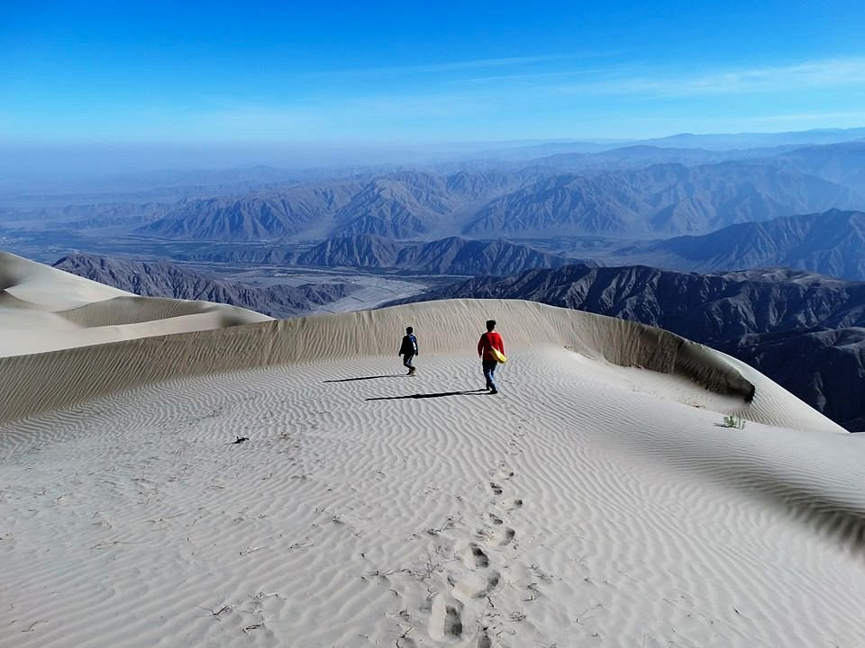
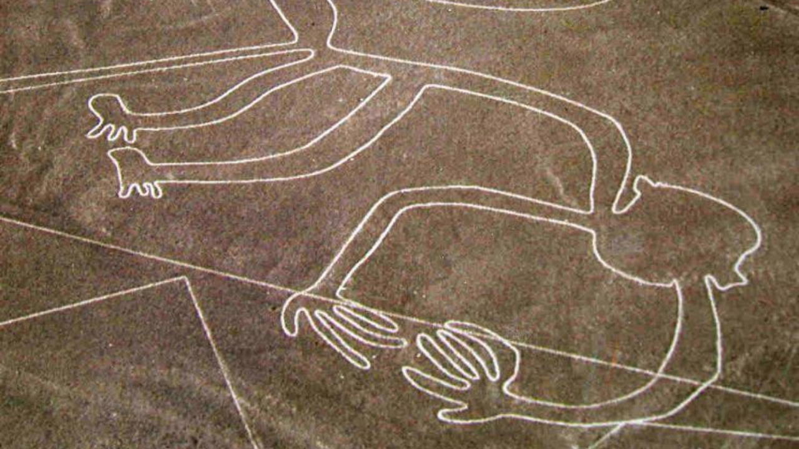

O Peru possui a duna de areia mais alta do mundo, Cerro Blanco, localizada no deserto de Sechura e neste mesmo deserto estão as famosas Linhas de Nazca, grandes geoglifos criados por civilizações antigas que podem ser encontradas no sul do Peru sendo um lugar extremamente curioso e legal de conhecer.

Você começa sua jornada no Peru visitando a maior duna de areia em Cerro Blanco.

Após a sua visita as dunas você aproveita para conhecer as linhas de Nazca e toda a sua história por trás, será mesmo que foram os incas que as fizeram?